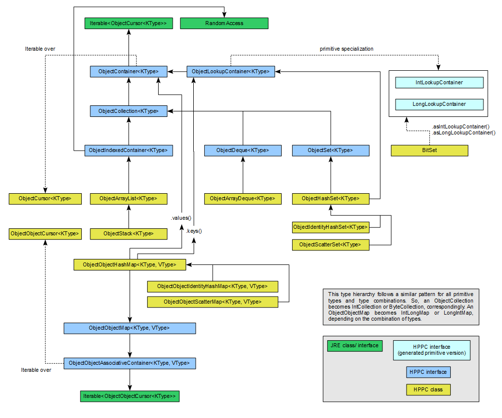

HPPC v0.9.0.RC2 API Documentation
byte, int, etc.) from a single template
to conserve memory and boost performance.
Why HPPC?
The Java Collections package is in many ways excellent, but it cannot be used for primitive types without autoboxing (which kills the runtime performance due to increased memory use and garbage collector overhead).
This library has slightly different design goals than Java Collections (and many other collection packages). For example, the internals of each class are open and subject to free hacking and tuning up to one's wishes.
Why not other primitive collection libraries?
There are a few projects implementing collections over primitive types: fastutil, Koloboke, PCJ, GNU Trove, Apache Primitive Collections.
Historically, some of these libraries were released on commercially forbidding licenses (fastutil) and others appeared to be abandoned (PCJ), so HPPC was created to fill this gap. Since then things have changed quite a lot (fastutil is now Apache-licensed, Koloboke has been released), but HPPC still remains a small memory footprint and does the job. If you require full Java collections compliance, try fastutil, or Koloboke, they are both very, very good.
Assumptions and goals of HPPC
We assume that:
- The programmer knows what he's doing and may wish to access internal storage of a given collection's class directly (not using predefined iterators, for example).
- Vast majority of scenarios use single-threaded access. There is little point in repeated verification for concurrent modifications, for example.
- The programs (algorithms) that use HPPC are unit-tested and regression-tested during development with assertions enabled, so their behavior in production systems does not have to be restrictively verified (we can assume the code should break during testing/ development when assertions are enabled).
From these assumptions stem the following design drivers:
- Data types in the HPPC are as simple as possible and expose internal storage for any optimisations one may wish to do from within the end-application code.
- Verification of parameter and state validity is done optionally
using assertions. This means that contracts are only checked if requested at
runtime (using Java 1.4+
-easwitch). When the algorithm is tested and verified, it can run with no additional overhead from contract checks. - We tried to avoid complex interface hierarchies, although certain interfaces are defined for clarity. The programmer should still choose a proper data structure at design-time and should know what he's doing.
- HPPC provides utilities for the most common tasks like filtering, iterating or joining collections, but these utilities are usually more expensive than implementing a low-level direct access to the data storage (which may be done if needed).
- There is no special support for data serialization.
- The implementation is not thread safe and does not attempt to provide fast-failing concurrency problems detection.
Design and implementation assumptions
- We want HPPC class templates to be implemented as regular Java classes (with generics) so that typical programming tools can be used for development, testing, etc.
- We want HPPC class templates to be usable as generic-collection classes (for boxed
numeric types or any other
Objecttypes), but at the same time we want specialized classes to be automatically-generated for primitive-types (to limit memory consumption and boost performance due to JIT optimisations).
Interfaces and their relation to Java Collections API
HPPC is not strictly modeled after Java Collections API, although we did
try to make the APIs look similar enough for comfortable use.
One particular thing largely missing in HPPC are "view" projections
(sublists or views over the collection of keys or values). Certain classes provide such views
(like ObjectObjectHashMap), but for the most part, specific methods are
provided that accept ranges or closure-like filters. If performance is still unsatisfactory,
the internals of each class are available for direct manipulation.
Rough relationships between Java Collections classes and HPPC classes are presented in the table below.
| Java Collections | HPPC (primitives) | HPPC (generics) | |
|---|---|---|---|
| bit sets | java.util.BitSet |
BitSet |
n/a |
| array-backed lists | java.util.ArrayList, java.util.Vector |
[type]ArrayList |
ObjectArrayList<T> |
| stacks | java.util.Stack |
[type]Stack |
ObjectStack<T> |
| deques | java.util.ArrayDeque |
[type]ArrayDeque |
ObjectArrayDeque<T> |
| hash sets | java.util.HashSet |
[keyType]HashSet |
ObjectHashSet<K>
[keyType]HashSet
|
| hash maps | java.util.HashMap |
[keyType][valueType]HashMap |
ObjectObjectHashMap<K, V>
[keyType]ObjectHashMap<V>
Object[valueType]HashMap<K>
|
The method-level API of the corresponding types is also similar, but distinct differences exist (consult the JavaDoc of each class).
Interfaces and container inheritance
HPPC's interfaces are modeled to encapsulate the common functionality enforced from all the classes that implement a given interface. The interface hierarchy is loosely inspired by STL.
An overview of interfaces and their relationship to data structures implemented in HPPC is depicted graphically below.
